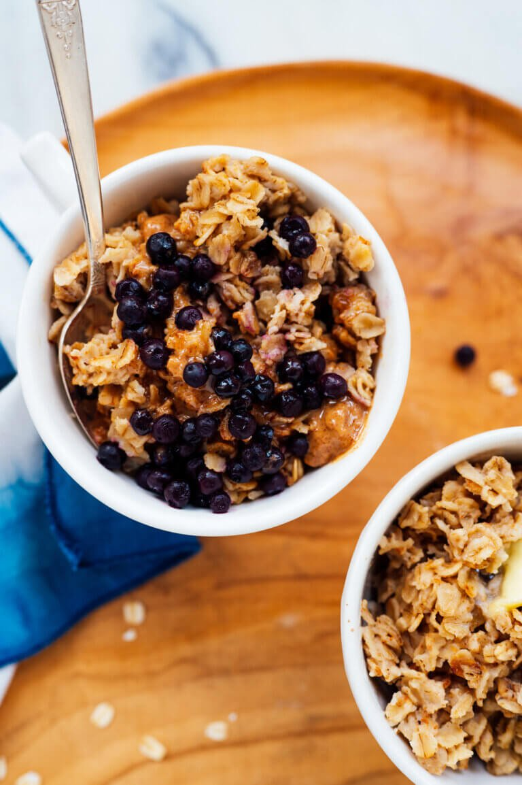

How to make the best Oatmeal
Description
The trick to making the best oatmeal? Toast it in the pot first. This oatmeal is flavorful, fluffy and truly delicious! Recipe yields 4 bowls of oatmeal and leftovers keep well for about 4 days.

Ingredients
- 2 tablespoons unsalted butter
- 2 cups old fashioned oats
- 1-1/2 cups water
- 1/2 cup milk or substitute
- 1 pinch of salt
- 1 pinch of cinnamon
Instructions
-
Melt the butter in a medium-to-large saucepan over medium heat. Once melted, add the oats and stir to coat. Cook, stirring occasionally, until the oats smell toasty and some are starting to turn lightly golden, about 4 to 6 minutes.
-
Pour the water and milk into the pot, being careful to avoid splatters. Add the salt and cinnamon, if desired. Stir to evenly incorporate the oats, then watch the pot until the mixture is bubbling rapidly around the edges. Continue cooking until the bubbles expand a couple of inches toward the center of the pot, about 3 minutes in total.
-
Cover the pot and turn off the heat. If using an electric cooktop, move the pot to a cool burner. If using a gas cooktop, leave it be. Either way, let the covered pot rest for 7 minutes.
-
When the timer’s up, remove the lid to check on the oats. The oats are done when they appear slightly dry and separated on top, with very little moisture remaining at the bottom of the pot. If it’s still too wet, recover the pot and let it rest for 1 to 2 minutes more. Serve as desired.
-
Leftover oatmeal will keep for about 4 days. Let the oats cool to room temperature, then cover and refrigerate.
Source: https://cookieandkate.com/best-oatmeal-recipe/